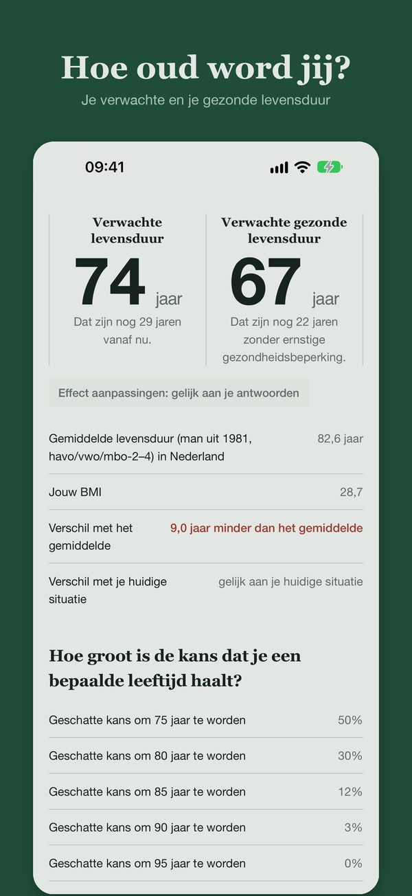
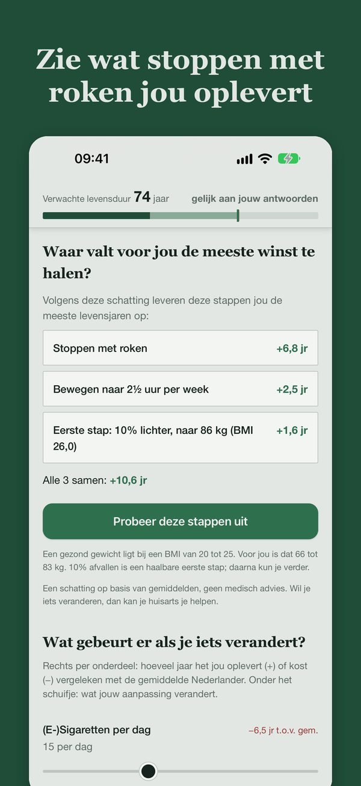
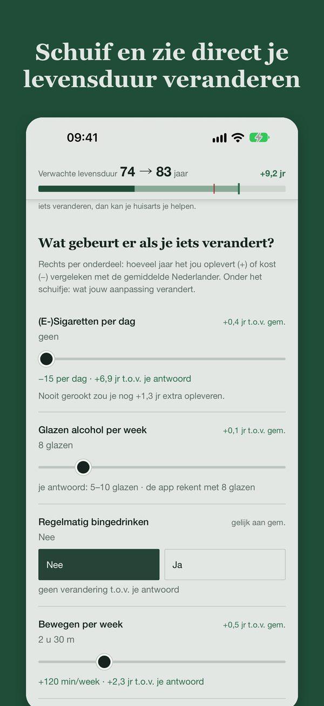
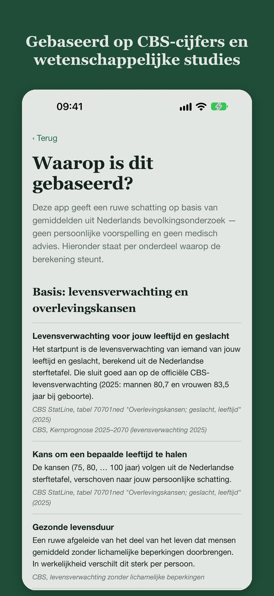
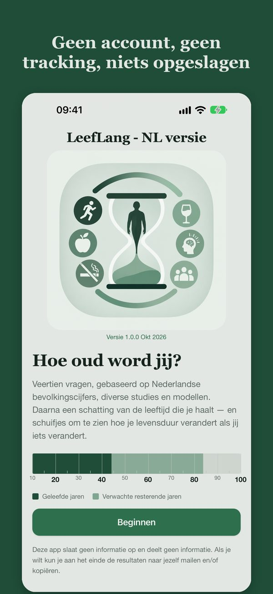

Pers
LeefLang is een Nederlandse app die laat zien hoe oud je volgens een schatting wordt, en hoeveel levensjaren een verandering in je leefstijl jou persoonlijk oplevert. Gemaakt door Ed Lauwerens uit Heemstede.
Feiten
| Naam | LeefLang — Hoe oud word jij? |
| Maker | Ed Lauwerens, Heemstede |
| Voor | iPhone en iPad (iOS 15 of nieuwer), Nederlands |
| Prijs | €0,99 eenmalig; geen abonnement, geen advertenties |
| Beschikbaar | App Store |
| Wat het doet | Veertien vragen, daarna een schatting van de levensduur en de gezonde levensduur, overlevingskansen, en met schuifjes het effect van leefstijlveranderingen in jaren |
| Basis | CBS-sterftetafel en internationale studies naar roken, alcohol, gewicht, bewegen, slaap, voeding, stress en sociale contacten (alle bronnen) |
| Privacy | Geen account, geen tracking; de app bewaart en verstuurt niets |
| Voorbeeld | Een man van 45 die rookt en weinig beweegt: 74 jaar. Stoppen met roken: bijna +7 jaar. Met meer bewegen en 9 kilo lichter samen ruim +10 jaar. |
De maker
"Iedereen weet dat roken slecht is en bewegen goed. Maar dat weten zet bijna niemand in beweging. LeefLang laat in concrete cijfers zien hoeveel jaar het jóu oplevert als je stopt met roken, meer gaat bewegen of gezonder gaat eten. Dat is interessant en soms confronterend, maar het geeft vooral hoop: je ziet wat een verandering je concreet oplevert in levensduur. Als LeefLang mensen helpt om die eerste stap te zetten, dan is mijn doel bereikt." — Ed Lauwerens
Beeldmateriaal
Vrij te gebruiken bij berichtgeving over LeefLang. Alles in één bestand: leeflang-perskit.zip.



Schermafbeelding 1

Schermafbeelding 2

Schermafbeelding 3

Schermafbeelding 4

Schermafbeelding 5 Ed Lauwerens: Portret (441 px, voor web) Ed Lauwerens: Staand (780 × 1040 px) Ed Lauwerens: Liggend, groot (2000 × 1500 px, voor print)


LeefLang geeft een schatting op basis van gemiddelden en is geen medisch advies.